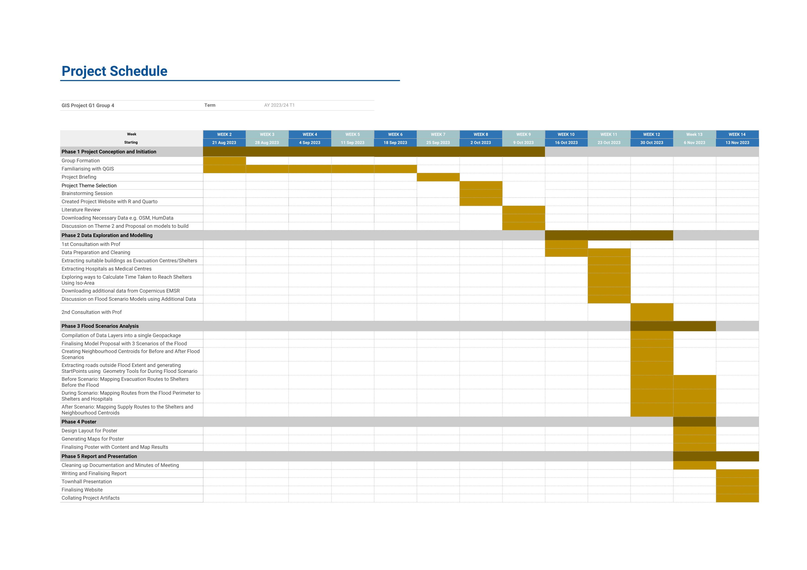

Proposal
Objectives and Motivation
With the number of natural disasters increasing in intensity and frequency, it is important to invest in ways to mitigate the adverse effects and develop appropriate disaster planning and response frameworks to better manage similar or more catastrophic occurrences in the future. Thus, our objective is to utilise what we have learned, Geographic Information technologies, to conduct a GIS-based accessibility analysis and mapping of emergency evacuation centres and medical services in this case study in Derna, Libya.
In a city ravaged by natural disasters, it is also crucial to recognize that different phases of an event entail distinct and specific community needs. Strategically pre-planning evacuation routes to access emergency centresbefore and medical services during a flood can play a pivotal role in substantially mitigating casualties. Moreover, identifying pathways to essential supplies in the aftermath of a flood not only fosters the city’s restoration but also optimises resource allocation during critical times of crisis.
Therefore, our project – FloodSafe – aims to determine the most efficient paths to get people to safety, medical care, and supplies in different stages of the flood. We presented our results and analysis in three flood scenarios: Before, During and After.
Data Used
Copernicus EMSR roads (with degree of damage)
Libya OSM Roads (1 Sep 23)
Libya OSM Roads, landuse_a, Points of Interest and Places of Worship, transport_a (23 Oct 23)
Flood Extent from HumData Exchange portal
Health Facilities from HumData Exchange portal (Hospitals)
Satellite data from OpenAerialMap
Derna City Hexagon (for clipping of datapoints)
Scope of Work
Prepare shelters data by classification, hospitals data, residential neighbourhoods in flood extent and OSM roads.
Before Scenario
Use 1 September 2023 OSM roads, find shelters outside flood extent, and use OD Matrix tool from residential centroids to said shelters.
Use python pandas to assign up to 10 neighbourhood centroids to each shelter, starting from the furthest one.
During Scenario
Find suitable roads outside flood extent, find start points from intersections with the flood extent that are connected to road networks.
Extract suitable shelters and hospitals outside the flood extent, use OD Matrix and SQL to form evacuation routes and shortest paths from start points to suitable shelters and hospitals.
After Scenario
Find suitable roads and create airport centroids.
Find airports and desalination plants as the starting points and residential neighbourhoods, hospitals and shelters(outside flood extent) as end points.
Select a midpoint on the previous shortest path on EMSR road and find shortest path to that from our start points using OSM roads.
Find shortest path to our endpoints from said midpoint to get the routes.
Project Timeline
This is our project Gantt Chart and timeline of the project.
